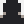

Bienvenue
sur mon Portfolio !
Profil
 En quelques phrases...
Je suis un étudiant en BTS SIO (Services Informatiques aux Organisations)
Etant passionné en informatique, j'ai l'ambition de démarrer une carrière de développeur
à la fin de mes études. Mon objectif est d'être un développeur polyvalent car
c'est, selon moi, un facteur clef d'embauche, d'opportunités et d'indépendance.
Isaac
Ghorzi
 Je suis aussi un artiste amateur
Je suis aussi un artiste amateur
Non seulement je suis passionné par la programmation, mais je le suis aussi pour l'art.
En effet je suis un artiste sur internet, spécialisé dans le pixel-art.
Je réalise des illustrations diverses, que ce soit par plaisir, ou pour un client.
Repoussant progressivement mes limites, c'est une activité qui me permet de voir certains
détails depuis un nouvel angle, d'acquérir de nouvelles
compétences, de m'exprimer, et de me faire connaître, m'ouvrant ainsi plus d'opportunités.
Mon activité artistique
Je me démarque dans plusieurs styles différents et je ne manque pas d'en essayer de nouveaux
pour pouvoir proposer du contenu différent et explorer mes limites.
Je pratique cette activité depuis que j'ai eu ma passion pour le développement de jeux vidéos,
c'est une compétence que j'ai développé dans l'objectif initial de pouvoir la soliciter
dans le développement de tels projets.
Voici un aperçu de mes travaux en Art :
..ce n'est évidemment pas tout et bien plus est à venir !
Si vous êtes intéressé,
n'hésitez pas à suivre mes pages sur les réseaux sociaux et peut-être même me commissionner !
Mon activité en Développement
// Cette section est encore en construction..
Interessé ?
voici une liste de tout mes réseaux sociaux actifs et contacts.